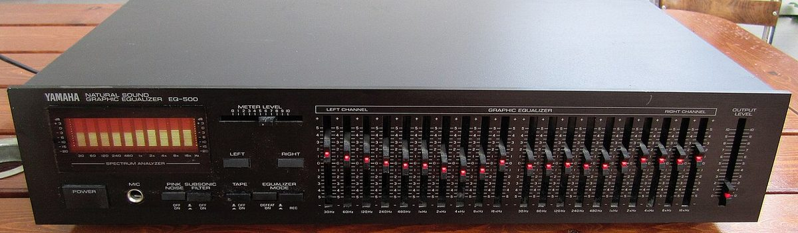
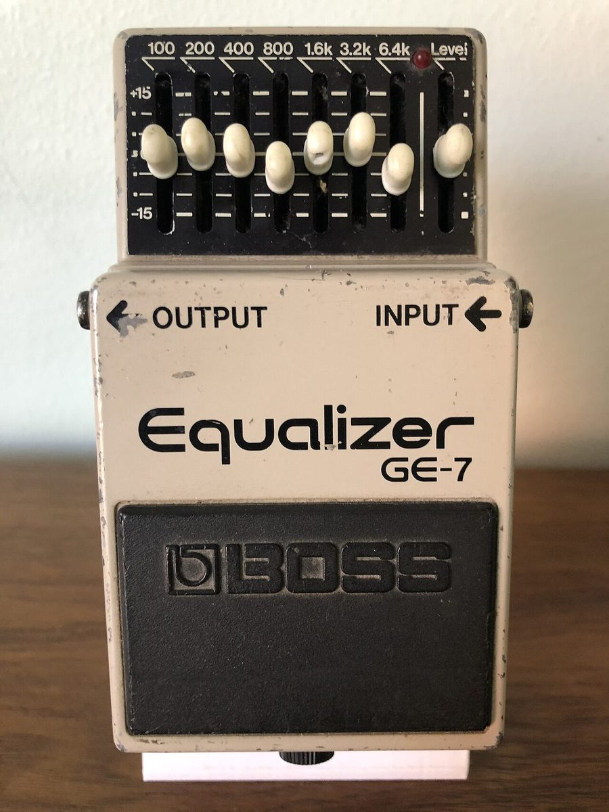
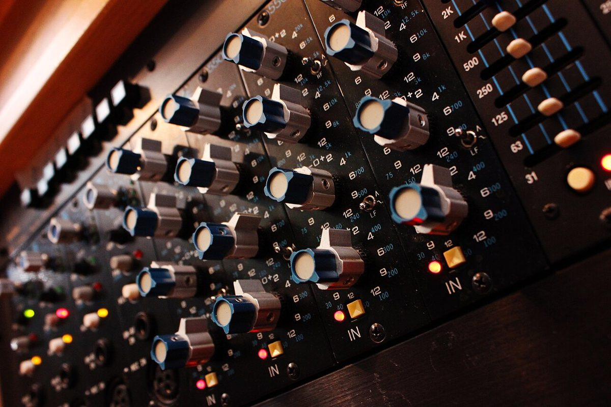
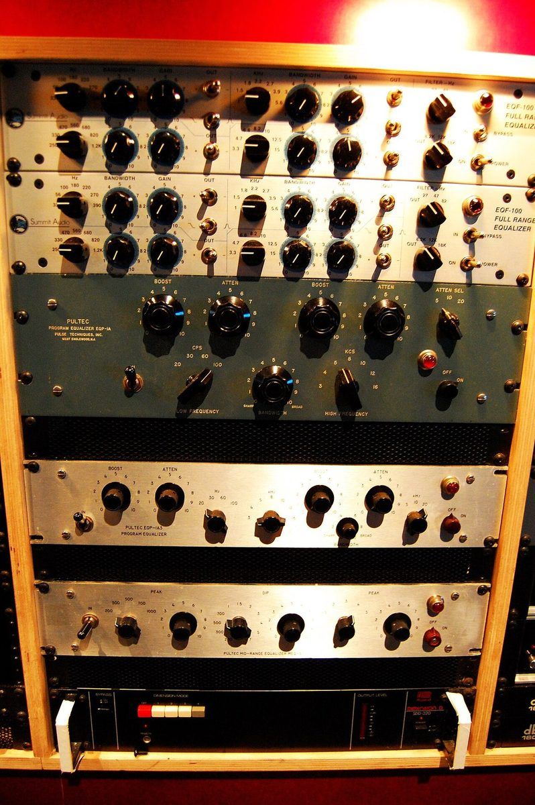

High-pass filter
Attenuates everything below the cutoff (12 dB/oct Butterworth here) to clear handling thumps and HVAC rumble.
Attenuates everything below the cutoff (12 dB/oct Butterworth here) to clear handling thumps and HVAC rumble.
High Q is narrow and surgical; low Q is wide and shapes broad musical neighborhoods.
Raises or lowers everything above (high shelf) or below (low shelf) the corner frequency.
Only acts when energy inside that frequency band crosses the threshold—ideal for intermittent vocal harshness.
Minimum-phase filters shift phase near cutoff; linear-phase FIR keeps phase aligned at the expense of latency and pre-ringing.
Fixed-frequency vertical faders—fast for ringing out stage monitors and house PA tuning.
Center frequency, gain, and Q—the surgeon's tool for isolating mud, boxiness, or rings.
Sweepable frequency and gain with fixed Q—classic analog channel strip mids.
Corner frequency + gain—broad low warmth or treble air without surgical notches.
Tames loud 3.5 kHz belt harshness without dulling quiet verse singing.
Prevents phase cancellation on parallel buses or stereo mastering stems.
Resistors, capacitors, and inductors sculpt gentle curves paired with tube makeup gain.
Click any photograph to enlarge it for class discussion.




Fixed frequency and width; fast, impossible to aim at one resonance.
Sweepable center frequency and gain, fixed bandwidth.
Independent frequency, gain, and Q on every band.
1. Name the symptom (rumble, mud, boxy, nasal, harsh). 2. Narrow Q and temporarily boost while sweeping Frequency until the ugly resonance jumps out. 3. Flip that boost into a modest cut (−3 to −7 dB). 4. Use Out Trim so EQ-IN and Bypass match in perceived loudness—never let louder fool you! Also see Level matching in Compression.
A. Eight fixed frequencies keep feeding back during a live show, and the engineer must react quickly.
B. A singer becomes harsh near 3.5 kHz only on the loudest notes.
C. A mastering engineer needs EQ on a parallel signal while keeping frequency components aligned.
D. A dialogue recording has one constant 520 Hz boxy resonance that must be isolated precisely.
E. An orchestra needs a gentle, broad increase in brightness above 8 kHz.
F. A simple mixer channel offers sweepable mids and gain, but no Q knob.
G. A mix needs broad, musical tone shaping with the character of a vintage analog circuit.